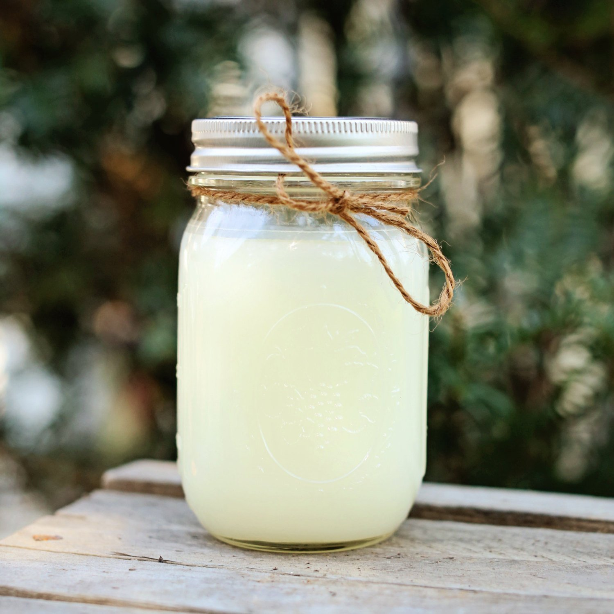
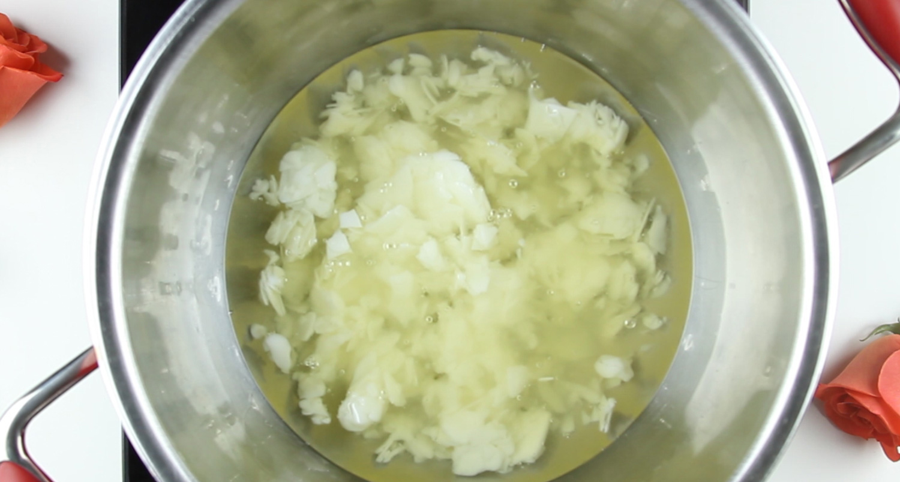
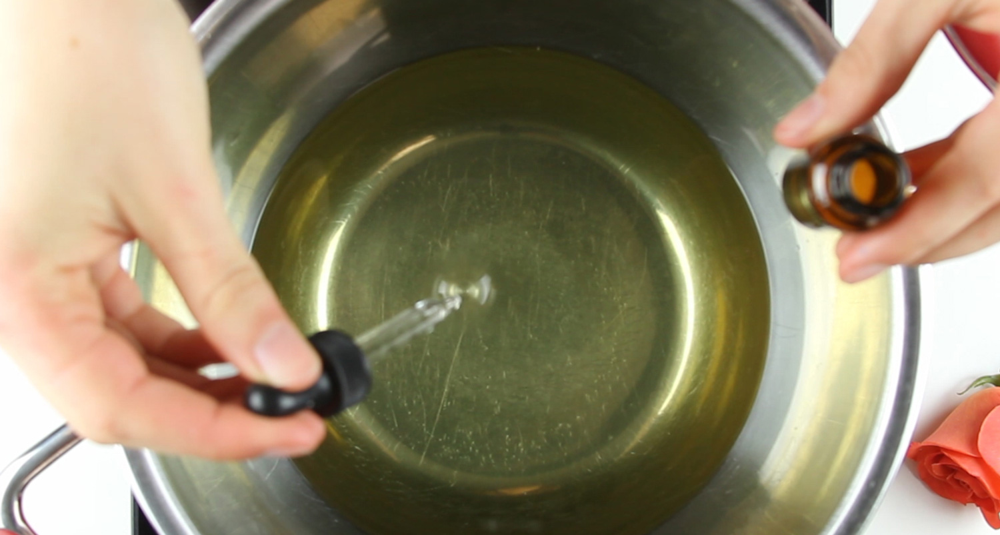
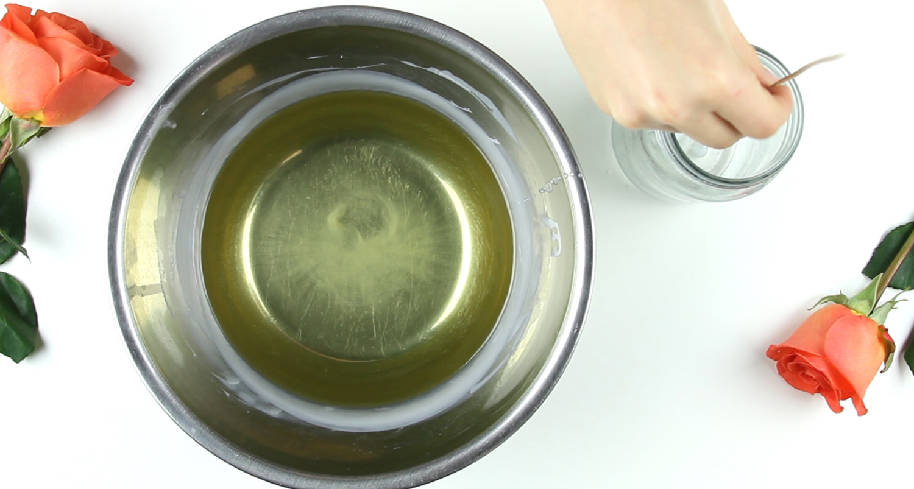
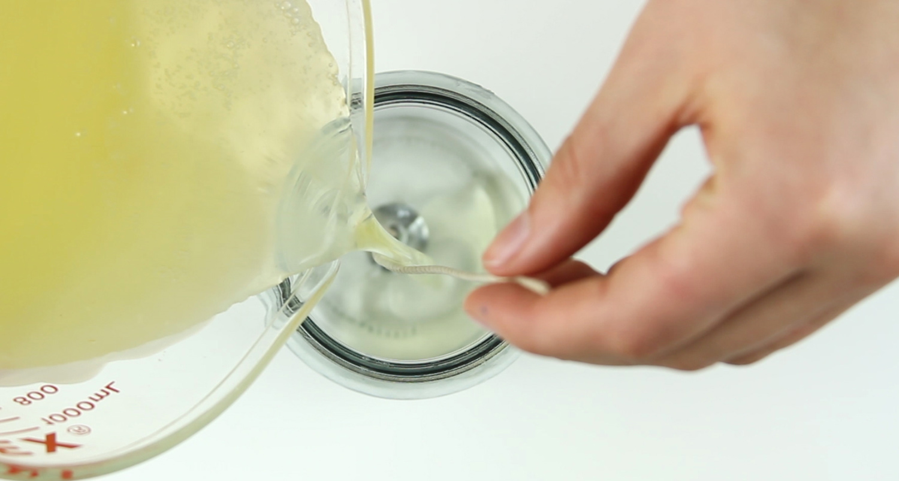
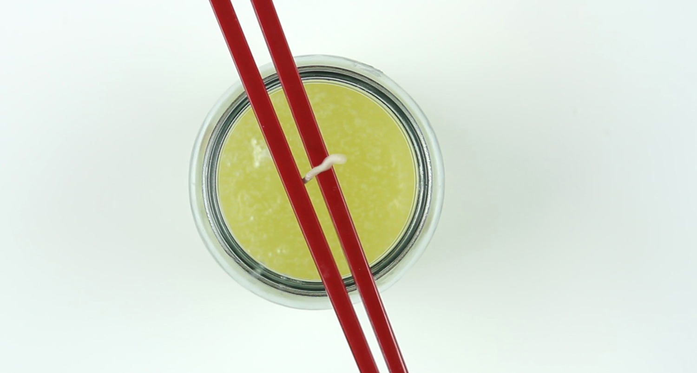
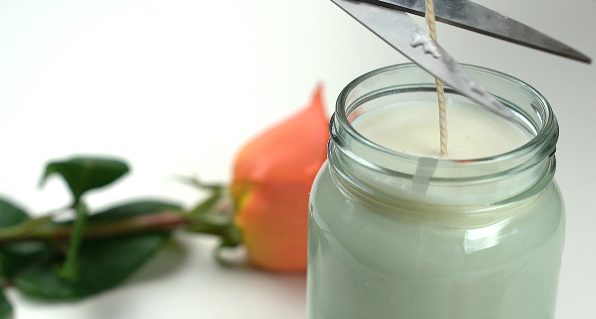

By: Madeline Simko

Measure the wax
Measure how much wax you would need to fill your container, then double it.
Melt the wax in the double boiler
Add several drops of essential oil
Attach the wick of your candle to your mason jar by dipping it in wax than sticking it to the bottom of the jar and let it harden
When the temperature of the wax reaches 140 degrees, pour it into the mason jar
Secure the wick inbetween two chopsticks
Once the wax is hardened, cut the wick 1/2" tall
